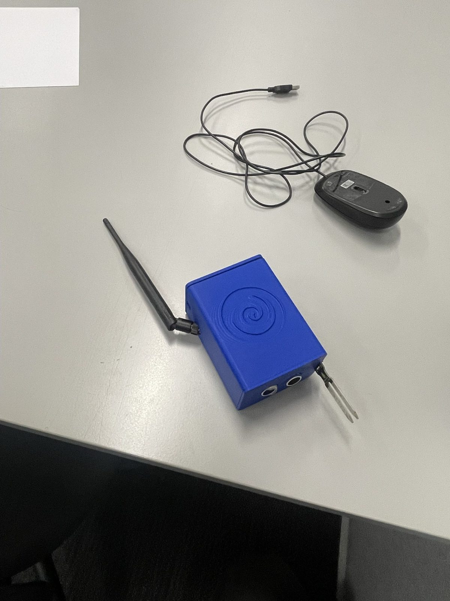
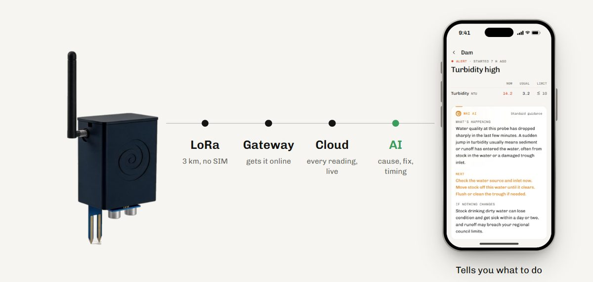
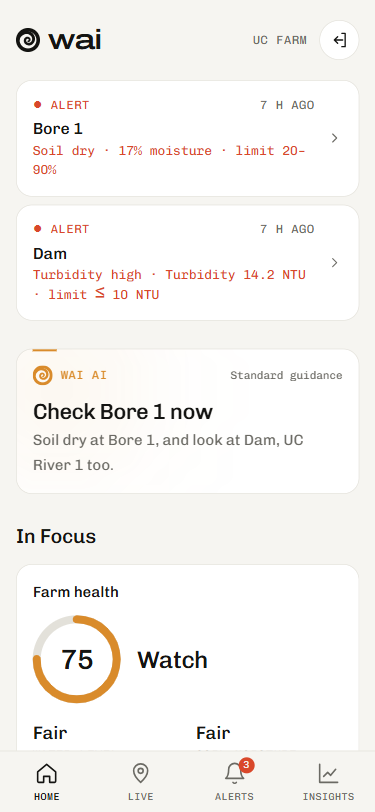
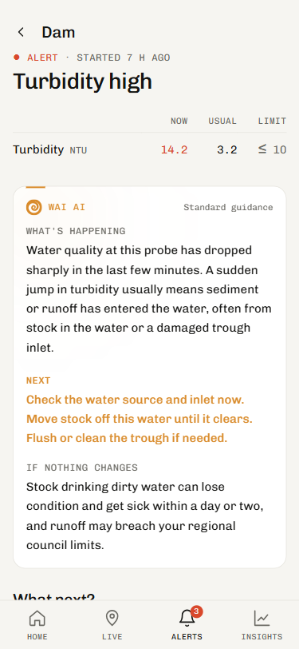
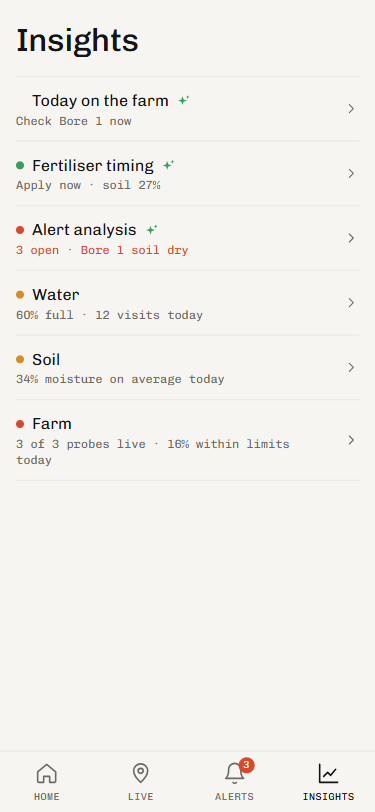
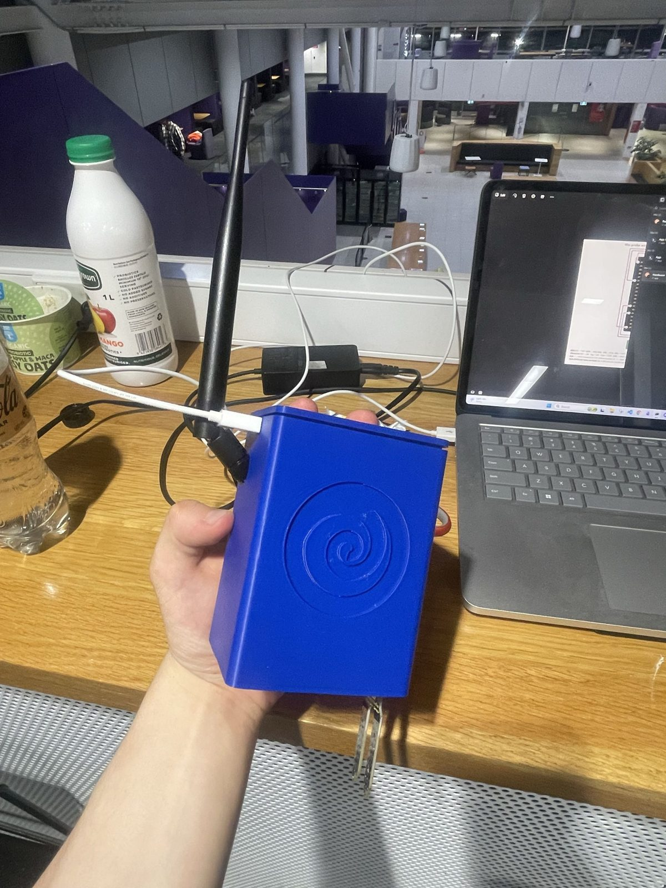

2026. 2nd at the OpenAI Hackathon. trywai.now · mobile app · web app
The health monitor for your farm. It does the checking for you. We built a mobile app, a web app and the hardware, and demoed all of it live.

The unit. ESP32, LoRa radio at 923 MHz, GPS, an ultrasonic water level sensor and a soil moisture probe, in a 3D printed case.
Probe to LoRa (no SIM) to gateway to cloud to AI. Every reading lands live. The AI works out the cause, the fix and how long you've got.

Probes chain over LoRa. Each one reaches 1 to 3 km to the next, so a string of them covers a whole farm with one gateway.



Farm health score, a map of probes with health and battery, live readings from the real hardware, and Wai AI, which gives suggestions on each probe's current readings. Alerts say what changed, why, what to do, and what it costs if you wait.
